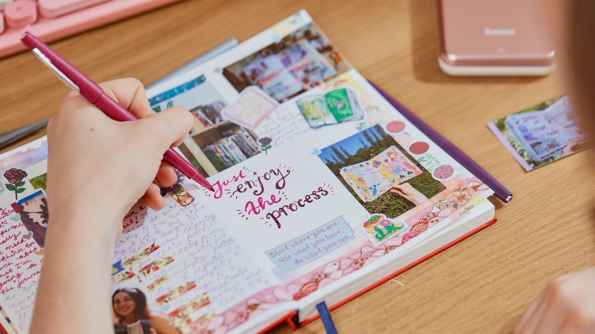

Tentang Saya
Halo! Saya Sitin, mahasiswa Manajemen Informasi Kesehatan semester 6.
Mari selesaikan apa yang sudah dimulai.
Pendidikan
Berikut adalah tempat pendidikan saya:
Hobi
Berikut adalah gambar yang menggambarkan hobi saya:
Saya suka menulis dan jurnaling
Pengalaman Magang
Berikut adalah pengalaman magang saya: